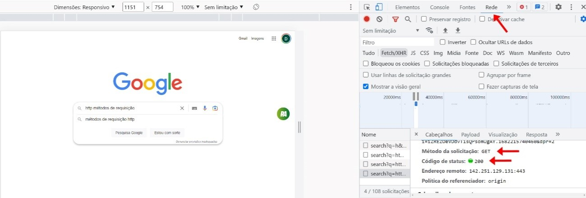

Como sugestão, configure a opção de leitura de caracteres e de pontuação de seu leitor de tela para o grau máximo de leitura, a fim de que os códigos disponibilizados neste material sejam lidos corretamente. No caso do NVDA (NonVisual Desktop Access), para localizar a opção Grau de pontuação/símbolos, acesse Preferências – Configurações – Fala. Altere o padrão Pouco para Tudo. Dessa forma, o leitor passará a ler os segmentos de código em sua totalidade.
Sempre que um sistema web é utilizado, seja clicando em um link, preenchendo um formulário ou clicando em um botão, ou seja, realizando uma ação dentro dele, é realizada uma requisição por meio do protocolo responsável pela comunicação entre o cliente o servidor, o conhecido HTTP (Hypertext Transfer Protocol ou protocolo de transferência de hipertexto). Por isso, é de extrema importância a todo programador web reconhecer quando uma requisição acontece, qual o tipo de requisição foi feito e qual a melhor forma de tratá-la. Com o domínio dessa etapa, a comunicação ficará mais estável e segura, garantindo assim a melhor qualidade na utilização do sistema.
Nas trocas de mensagens entre cliente e servidor, há dois tipos distintos de mensagens HTTP, uma que é realizada pelo cliente pedindo que algo seja feito, chamada de requisição ou request, e a reposta do servidor, chamada de resposta ou response. É importante citar que sempre quem inicia uma troca de dados é o cliente, já seu cancelamento pode acontecer por qualquer uma das partes. É importante saber que existe uma estrutura padrão para requisições e respostas no HTTP. Veja a divisão dessa estrutura no infográfico a seguir.
a) Uma linha inicial, chamada de start-line, que mostra o tipo de requisição pedido, além de poder mostrar também seus status de sucesso ou falha.
b) Um conjunto não obrigatório de cabeçalhos (headers) HTTP, demostrando as peculiaridades da mensagem ou demonstrando os itens contidos no seu corpo.
c) Uma linha em branco, chamada empty line, onde é destacado o fim do cabeçalho e o início do corpo da mensagem.
d) Na última parte, tem o corpo (body) da mensagem, este que, no caso, não aparece em todas as mensagens.
Veja esses elementos na imagem a seguir.
Figura 1 – Exemplos de requisição e resposta no HTTP
Fonte: Mozilla (c1998-2023)
A comunicação entre cliente e servidor ocorre por meio do protocolo HTTP, e sempre que o navegador (cliente) faz uma solicitação ao servidor, ele recebe um código composto por três números, informando se a solicitação foi bem-sucedida, se houve algum erro ou se é necessária uma autenticação prévia para envio da resposta.
Entre os códigos de status existem cinco categorias, e é necessário saber que o primeiro dígito desse código define a categoria a qual ele pertence. Por exemplo, o código de status 403, que começa pelo número 4, indica que é um erro do lado do cliente (usuário), já um erro de número 503, que começa pelo número 5, é um erro do lado do servidor. Desse modo, é importante conhecer o que cada número de 1 a 5 significa dentro do status.
No infográfico a seguir, note que, na linha inicial, há o código “403”: esse é o status retornado para aquela requisição. Com essas informações, é possível conhecer as principais categorias de status.
Os códigos das linhas 4XX e 5XX são os códigos de erro.
a) Categoria 1XX: inicia com o valor 1 e tem valores como, por exemplo, 101, 102, 103 etc. Essa categoria é utilizada pelo servidor para informar ao cliente que uma solicitação/requisição está em andamento.
b) Categoria 2XX: inicia com o valor 2 e tem valores como, por exemplo, 201, 202, 203 etc. Essa categoria é utilizada pelo servidor para informar ao cliente que uma solicitação/requisição está aceita pelo servidor. É esse o tipo de requisição esperada ao fazer um pedido ao servidor, pois indica que está tudo certo e o processo continuará seu andamento.
c) Categoria 3XX: inicia com o valor 3 e tem valores como, por exemplo, 301, 302, 303 etc. Essa categoria indica que é preciso um redirecionamento, ou seja, novos passos são necessários para que a requisição seja aceita.
Os códigos das linhas 4XX e 5XX são os códigos de erro.
d) Categoria 4XX (erro/cliente): inicia com o valor 4 e tem valores como, por exemplo, 401, 402, 403 etc. Essa categoria é utilizada pelo servidor para informar erros do lado do cliente, ou seja, a requisição foi recebida, mas não pôde ser continuada por uma falha que aconteceu do lado do cliente.
e) Categoria 5XX (erro/servidor): inicia com o valor 5 e tem valores como, por exemplo, 501, 502, 503 etc. Essa categoria é utilizada pelo servidor para informar ao cliente um erro que ocorreu do lado do servidor.
Além das categorias dos principais status do HTTP, existem alguns erros mais constantes que precisam ser conhecidos. Veja os principais a seguir.
a) Código 200: esse código de erro não significa um erro em si, mas é necessário conhecê-lo, pois é o código esperado como solução para qualquer erro anterior, ou seja, o código 200 indica que a solicitação foi bem-sucedida/aceita.
b) Código 500: esse é um erro interno do servidor e é um dos erros mais temido pelos usuários, pois indica que o servidor está passando por alguma instabilidade e não está conseguindo dar andamento à requisição do cliente.
c) Código 403 (Forbidden): esse é o conhecido acesso proibido, é simplesmente uma negação do servidor à requisição do cliente, ou seja, demonstra que o cliente não tem permissão de acesso ao conteúdo requisitado. Esse erro é comum de ser visto durante navegações pela web, pois ele é uma forma de proteger os dados de acessos indevidos, geralmente solucionado por meio de autenticação.
Deve-se deixar claro que a URL foi encontrada, diferentemente do erro 404, em que não é encontrada a URL requisitada.
Código 503: esse é um dos códigos mais conhecidos do HTTP, ele indica uma falha de solicitação do lado do servidor, normalmente um processo de manutenção, sobrecarga de dados ou erro de configuração interna do servidor.
Código 404: clássico erro indicando que a página requisitada não foi encontrada, normalmente por erro de digitação da URL ou porque a página está fora do ar.
As requisições sempre contam com um método ou verbo que indicam como os dados enviados ao servidor devem ser tratados. Por padrão, uma requisição utiliza o método GET. A seguir, veja o conceito de cada método separadamente.
Os métodos POST e GET são padrão para aplicações web, enquanto PUT, PATCH e DELETE são mais especificamente utilizados em web services. Enquanto do lado do cliente o request envia o verbo necessário, do lado do servidor, o back-end processa de acordo com esse verbo. Por exemplo, se o servidor receber requisição POST, a ideia é que também trate os dados recebidos e o processe potencialmente gravando em banco de dados, por exemplo. Já se receber GET, o processamento será no sentido de retornar uma página do sistema ou alguma informação processada pelo servidor.
Dentro do próprio navegador Google Chrome, há uma ferramenta para visualizar as respostas do servidor perante qualquer requisição do cliente. Quando estiver navegando na internet, use o atalho F12, que dá acesso a Dev Tools ou ferramenta do desenvolvedor, que será utilizado como exemplo a partir de agora.
a) Exemplo de retorno de requisição 200 de uma busca do Google.

Figura 2 – Ferramenta de desenvolvedor: status 200
Fonte: Google Chrome (2023)
Note que, em um exemplo real de uma pesquisa, quando a requisição é aceita pelo servidor, ele retorna o status 200, já estudado, que indica que a requisição foi aceita.
A ferramenta do desenvolvedor pode estar em inglês, então é utilizado o item Network para acessar as requisições.
A seguir, serão analisados alguns itens importantes.
b) Exemplo de retorno de requisição 404 de uma busca do Google.
Figura 3 – Ferramenta de desenvolvedor – status 404
Fonte: Google Chrome (2023)
Ao tentar acessar o endereço http://www.google.com.br/cadastro, que é um endereço inválido, é possível entender com exatidão o uso do retorno 404 para páginas inexistentes.
Figura 4 – Ferramenta de desenvolvedor – status 404
Fonte: Google Chrome (2023)
Ao tentar acessar indevidamente o endereço http://www.senacead.com.br, que é um endereço que necessita de autorização, é possível entender o uso do retorno 403 para páginas que necessitam de login prévio.
Para simular o uso de uma API, será utilizado o JSON Server, que é uma biblioteca que permite criar simulações de API, desenvolvendo um ambiente para testar os métodos de tratamento de requisições do HTTP na prática.
Na Unidade Curricular “Desenvolver e organizar interface de usuário e elementos visuais para aplicações web (front-end)”, você pôde conferir o passo a passo de utilização do JSON Server.
Primeiramente é necessário criar um arquivo “.json” para iniciar uma base de dados que será utilizada nos testes futuros. O arquivo será chamado senacdb.json e serão colocados quatro alunos e suas menções em uma unidade curricular, conforme pode ser visto no exemplo do código a seguir.
{
"senacead": [
{
"id": 1
"nome": "Pedro Antunes",
"atividade1": "A",
"atividade2": "A",
"atividade3": "PA",
},
{
"id": 2
"nome": "Ricardo Almeida",
"atividade1": "SM",
"atividade2": "SM",
"atividade3": "SM",
},
{
"id": 3
"nome": "CarlaSilva",
"atividade1": "A",
"atividade2": "A",
"atividade3": "A"
},
{
"id": 4,
"nome": "Juliano Nunes Ribeiro",
"atividade1": "A",
"atividade2": "A",
"atividade3": "A"
}
]
}
Note que foram inseridos quatro alunos dentro da base de dados “senacead”. Agora é possível utilizar os métodos para manipular esses dados, começando pelo método GET. Por padrão, o endereço de visualização do JSON Server é http://localhost:3000, que pode ser complementado para visualizar um determinado elemento, como, por exemplo:
A partir daqui, o mais importante é entender o que está acontecendo com os dados sempre que um método é usado, pois os comandos em si não são os mais importantes na medida em que existem diversas formas de fazê-los.
Será mostrado um dado de envio e qual resposta será dada pelo servidor para melhor entendimento, e o GET, como demonstrado por padrão, retornará os dados requisitados.
Envio:
GET http://localhost:3000/senacead/
Content-Type: application/json
Retorno:
Como foi especificado na URL, apenas “senacead” e nenhum ID de aluno, nesse caso, serão retornados todos os quatro alunos, com seus nomes e suas três menções de atividades. Pode-se continuar usando o GET, mas agora marcando um aluno, para ver suas menções.
Envio
GET http://localhost:3000/senacead/2
Content-Type: application/json
Retorno:
{
"id": 1
"nome": “Pedro Antunes”,
"atividade1": "A",
"atividade2": "A
"atividade3": “PA” }
Nesse exemplo, serão analisadas as respostas do servidor por meio do DevTools do Chrome. Há três abas principais na ferramenta: geral, cabeçalho de resposta e cabeçalho de solicitação. Serão analisadas as principais informações delas.
Figura 5 – Ferramenta de desenvolvedor – aba Geral
Fonte: Google Chrome (2023)
As informações mais importantes para ler essa aba são:
a) Solicitar URL: aqui é mostrada a URL utilizada, o que é importante para ver se a ferramenta do desenvolvedor está fazendo realmente a análise da URL desejada.
b) Método de Solicitação: aqui é possível ver o verbo utilizado na mensagem, que, nesse caso, é o GET.
c) Código de Status: 304 indica que a solicitação não necessita retransmitir uma requisição de recursos, ou seja, é apenas uma visualização via GET.
d) Endereço remoto: aparece o endereço do servidor.
Figura 6 – Ferramenta de desenvolvedor – Aba Cabeçalho de resposta
Fonte: Google Chrome (2023)
As informações mais importantes para ler essa aba são:
a) Acess-Control-Allow-Credentials: indica se a resposta a esta requisição pode ser ou não mostrada. Nesse caso de true, ela tem permissão para ser mostrada.
b) Cache-control: é usado para especificar diretivas para mecanismos de cache tanto em requisições quanto em respostas.
c) Connection: esse item é de controle de conexão. No caso keep-alive, indica que ela pode continuar aberta após o término da mensagem.
d) Date: contém hora e data que a mensagem foi enviada
e) Keep-alive: aqui é possível definir um tempo limite mínimo que a conexão deve ficar aberta. Nesse item, foram indicados 5 segundos com o termo timeout=5, e um máximo de requisições que não foi especificado nesse caso.
Figura 7 – Ferramenta de desenvolvedor – Aba Cabeçalho de solicitação
Fonte: Google Chrome (2023)
As informações mais importantes para ler esta aba são:
a) Accept: indica quais tipos de documentos/formatos de conteúdo o cliente pode receber.
b) Accept-Encoding: aqui é indicado o tipo de compressão/codificação o cliente é capaz de entender.
c) Accept-Language: aqui é indicado o tipo de linguagem que o cliente pode receber.
d) Cache-control: esse item aparece tanto em respostas como em requisições e tem o mesmo conceito apresentado na aba de resposta.
e) Connection: esse item também aparece tanto em respostas como em requisições e tem o mesmo conceito apresentado na aba de resposta.
f) Host: aqui é indicado o endereço do servidor utilizado na requisição.
No caso do POST, ele enviará novos valores à base da dados. Será testada a inclusão de um novo aluno.
Envio:
POST http://localhost:3000/senacead/
Content-Type: application/json
{ "id": 5
"nome": “Ana Carolina Magalhães dos Santos”,
"atividade1": "A",
"atividade2": "A
"atividade3": "A"
}
Retorno:
{ "id": 5
"nome": “Ana Carolina Magalhães dos Santos”,
"atividade1": "A",
"atividade2": "PA
"atividade3": "PA"
}
Com o uso do método POST, um novo aluno é inserido na base de dados, juntamente com todos os seus dados.
No caso do PUT, foi alterado um produto por completo.
Envio:
PUT http://localhost:3000/senacead/5
Content-Type: application/json
{ "id": 5
"nome": “Ana Carolina Magalhães dos Santos”,
"atividade1": "A",
"atividade2": "A"
"atividade3": "A"
}
Retorno:
{ "id": 5
"nome": “Ana Carolina Magalhães dos Santos”,
"atividade1": "A",
"atividade2": "A"
"atividade3": "A"
}
Pode-se notar que todos os dados foram percorridos com o uso do PUT e alteradas/atualizadas as notas das atividades 2 e 3 para “A”.
No caso do PATCH, foi alterada apenas parte do produto. Será utilizado o PUT para alterar um sobrenome que está errado no aluno 5.
Envio:
PATCH http://localhost:3000/senacead/5
Content-Type: application/json
{
"nome": “Ana Carolina Magalhães Santos”,
}
Retorno:
{ "id": 5
"nome": “Ana Carolina Magalhães Santos”,
"atividade1": "A",
"atividade2": "A"
"atividade3": "A"
}
Nome alterado com sucesso, dessa forma, fica simples ver o padrão de utilização dos métodos, faltando agora apenas o DELETE.
No caso do DELETE, é usado para excluir um produto por completo.
Envio:
DELETE http://localhost:3000/senacead/1
Content-Type: application/json
Retorno:
Status: 200 OK
O status 200 indica que o aluno com o “id=1” foi removido com sucesso.
Com base nos exemplos, é possível entender o padrão de utilização de cada um dos métodos de requisição HTTP, erros esses que podem ser notados, muitas vezes, ao navegar na internet.
Com o conhecimento dos métodos de requisição e as possíveis respostas que o servidor tem para um pedido, o programador tem um controle muito maior da interação cliente/servidor, o que melhora, de muitas formas, o sistema web em criação, como, por exemplo, podendo mostrar uma mensagem que deixe mais claro para o cliente o que está acontecendo, no lugar de simplesmente um número na tela, ou redirecionando o cliente para alguma solução sempre que um erro indesejado acontecer.
Portanto é indispensável estar sempre atualizado sobre conceitos e atualizações do protocolo HTTP, para garantir sistemas mais seguros e estáveis, que permitam uma utilização mais agradável por parte do usuário, pois o tratamento de erros é também um dos pilares da usabilidade.